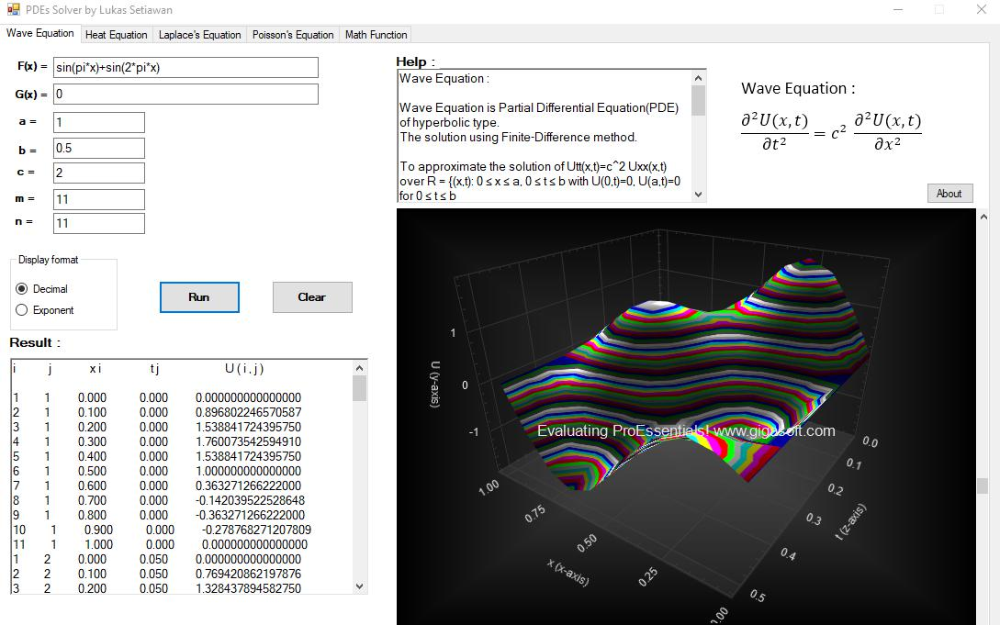

This site is under construction !!!
Numerical methods are techniques in which mathematical problems are formulated in a way that allows them to be solved using only arithmetic operations such as addition, subtraction, multiplication, and division.
Not every mathematical equation has an analytical (exact) solution. Some equations do not have analytical solutions, and in such cases, numerical methods take on the role of solving them. One example is nonlinear differential equations(Ordinary Differential Equations/ODEs and Partial Differential Equations/PDEs).
Here are the examples of the problems that have no exact solution:
- Van der Pol Equation(example of nonlinear ODEs that have no analytical solution):
\[\frac{\text{d}^2y}{\text{d}t^2}=-\mu(1-y^2)\frac{\text{d}y}{\text{d}t}+y=0\]
- Nonlinear Schrödinger Equation (NLS) is one of an example in PDEs:
\[i \frac{\text{d} \psi}{\text{d}t}+\nabla ^2 \psi+|\psi|^2\psi=0\]
The use of numerical methods to solve the Wave Equation (a Partial Differential Equation of hyperbolic type).
